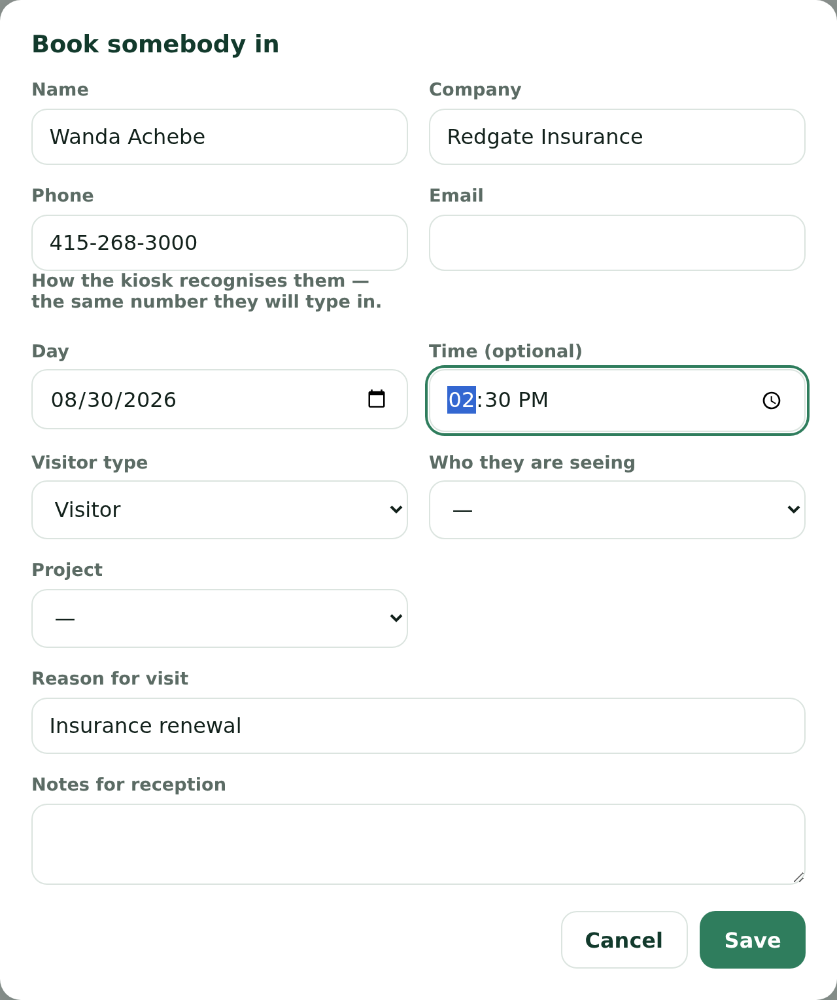
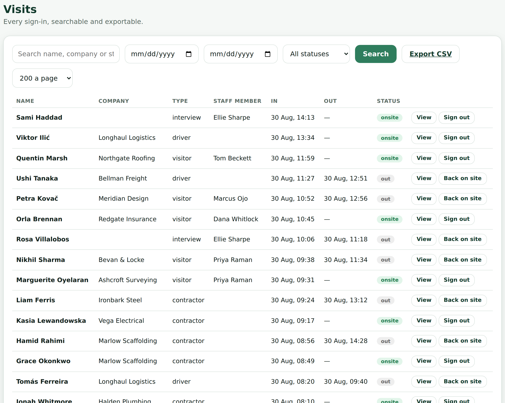
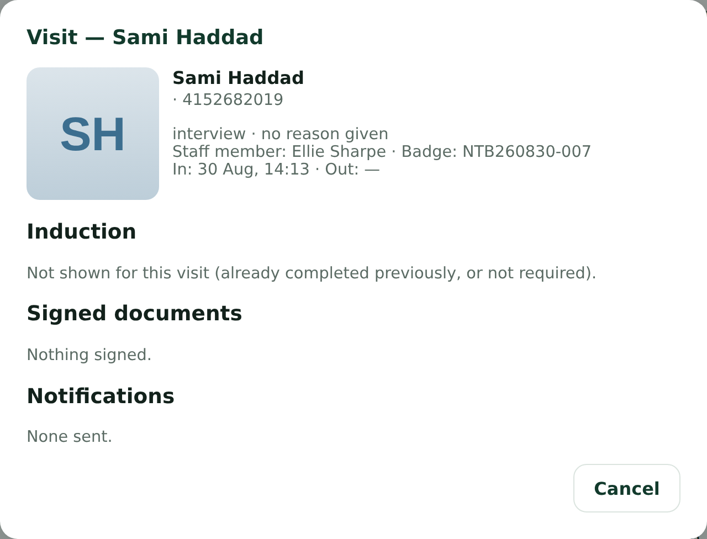
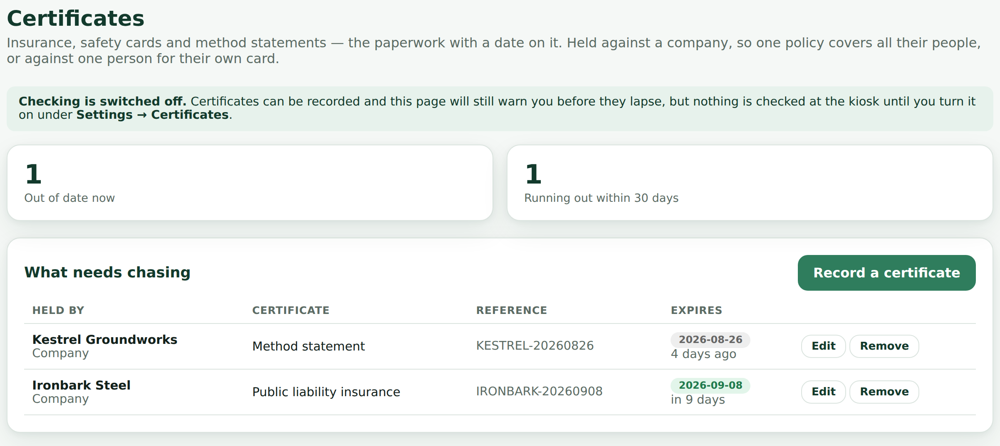
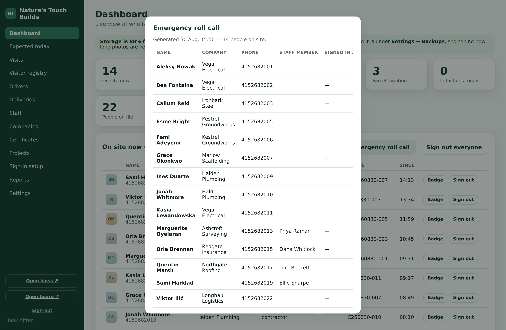
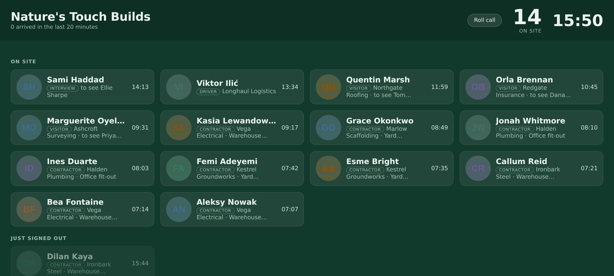
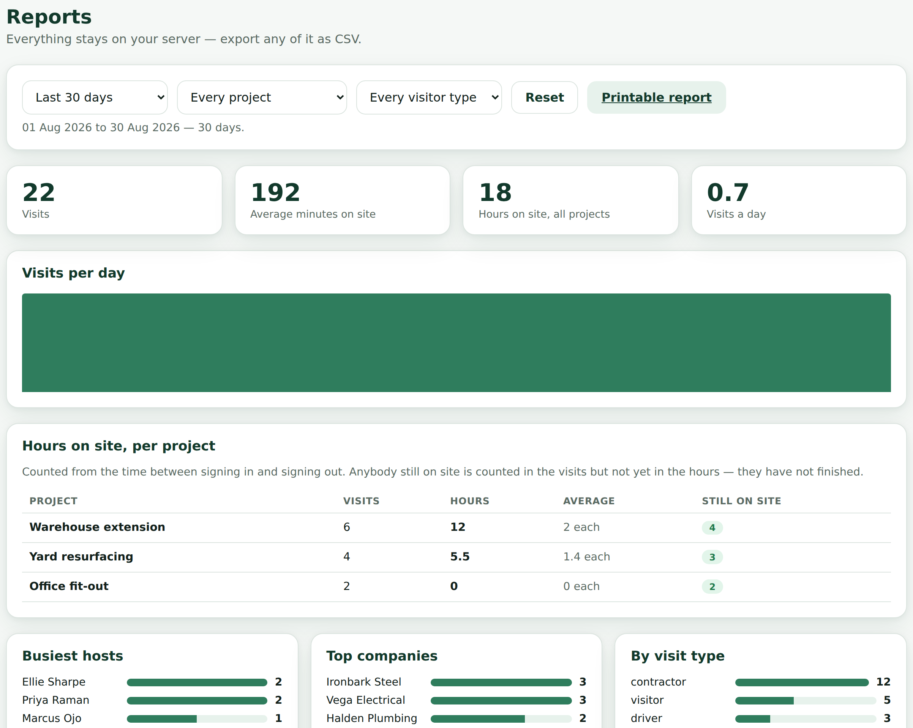
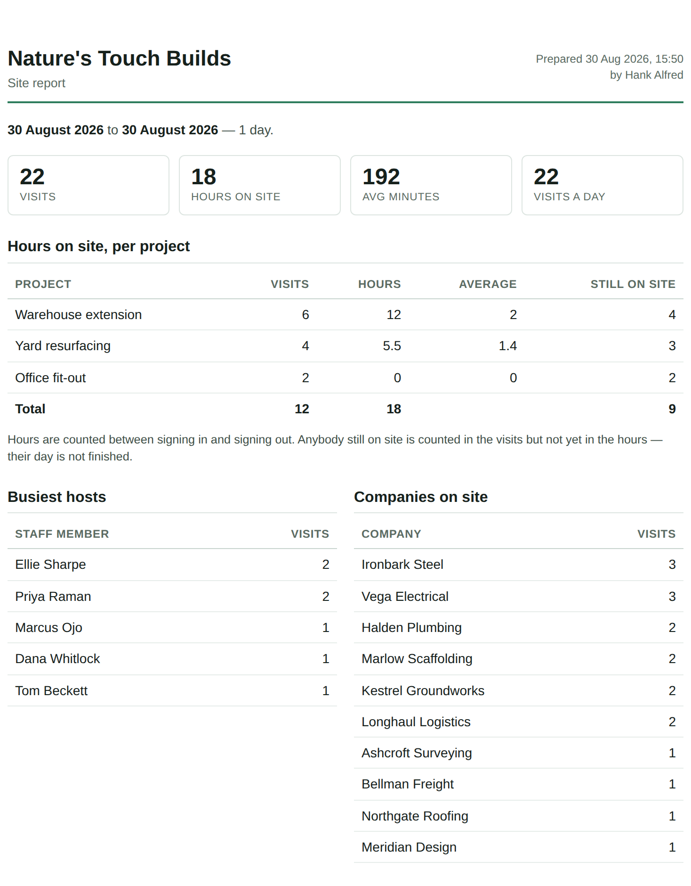

Smart Lobby
Running the gate day to day: who is expected, who is on site, and what to do when somebody cannot sign themselves in.
A visitor book that runs on your own server. It records who is on site, tells the person they are here to see, keeps the paperwork they signed, and can print them a badge.
Everything lives on one machine you control. There is no account with a supplier, nothing is charged per person, and no visitor's photo or phone number leaves the building. That matters most on the day somebody asks who was on site at four o'clock last Tuesday: the answer is in your own database, not in somebody else's cloud.
There are two halves to it, and you will use both:
The kiosk keeps working when the network drops. A visitor can complete a full sign-in — details, photo, documents, signature, the induction video — with no connection at all. It saves on the tablet and records itself the moment the line comes back. A banner on the kiosk says the connection is down and how many sign-ins are waiting, so you know without being told.
Your login is scoped to the desk. Reception can see the dashboard, visits, the registry, projects and reports — everything needed to run the front of house. Settings, backups, device setup and other people's accounts belong to an administrator. If a page you need is not in the menu, that is why; ask whoever administers the system rather than looking for a way around it.
Open the dashboard address in a browser — your administrator will have given it to you. It looks
like https://your-site.example.com/admin/. Sign in with your email address and
password.
If somebody else set your password, it is temporary. Until you change it your login can do exactly two things: show you who you are, and change your password. That is deliberate — it means the person who typed your password cannot go on signing in as you. Change it and everything opens up.
There is no "forgot password" email, because there is no supplier to send one. The way back in is a command run on the machine holding the data, which your administrator can do. Do not spend twenty minutes trying passwords; call them.
The desk machine can stay signed in all day. If you share the desk with someone on another shift, sign out at the end of yours — every action is recorded against whoever was signed in, and an audit that names the wrong person is worse than no audit.
The dashboard is built around the three questions the desk actually gets asked: who is coming, who is here, and has everyone gone home.
Open Expected today. This is the list of people booked in before they arrived — the crew starting a new job, the auditor at ten, the interview at two. Each row shows the day, the time if one was given, who they are here to see, and an arrival code.
The dashboard also carries a Still expected today figure at the top, beside who is on site. That number is the one you will be asked for at eight in the morning.
The dashboard's On site now list updates as people sign in. Each row carries the name, company, who they are visiting, what time they arrived and their badge number. From here you can sign somebody out, reprint their badge, or open the full visit record.
Arrivals also go out as notifications — an email, a Teams message or a text — to the person being visited, so most of the time nobody needs to be fetched. If somebody is standing at your desk because their host has not appeared, open the visit record and check the notification log at the bottom: it says whether the message was sent, and why if it was not.
People forget to sign out. Two things handle it:
Signing out everyone marks every open visit as having left now. If a night shift is genuinely still on site, do not use it — their hours will be wrong on the report. It is for the end of a day when you know the place is empty.
A site knows about most of its visitors the day before. Booking them in means the kiosk already knows them, and you can answer "who is coming today" without asking around.


They sign in at the kiosk exactly like anybody else. When they type the phone number you recorded, the kiosk recognises the booking and fills in what it already knows — name, company, who they are seeing, which job, the reason for the visit. The screen says You're expected. They check it, add anything missing, and carry on.
The booking marks itself arrived against the visit that did it, so your list empties itself as the day goes on. Nothing needs ticking off.
Six characters, with no letter O or digit 0 in it because somebody reads it off a phone screen. Pass it on to the visitor or their host if you like — but it is a convenience, not a password. The phone number works just as well, and the code stops working the moment it is used.
Edit any booking that has not been walked in on. To cancel, open it and set the status to Cancelled — a cancelled booking greets nobody at the kiosk. Remove deletes it outright; nobody is signed in or out by either, because a booking is only ever a plan.
Once somebody has arrived, the booking becomes history and cannot be edited. That is on purpose: it is now a record of a visit that happened, and editing it to say something else is not an edit.
A booking nobody came to is marked Did not come the next day rather than being deleted. Filter the list by that status to see them. On a contractor site, "we booked them in and they never turned up" is a conversation somebody has to have, and the record is what makes it possible.
Nobody on the expected list appears on the roll call, the on-site board, or the count of who is here. They are not on site until they sign in. In a fire that distinction is the whole point.
Worth knowing in outline, because when somebody gets stuck you will be the one standing beside them.

Welcome screen, then a card for what they are doing — sign in, sign out, contractor, interview, driver, delivery. Then their details, a photo, any documents to sign, the induction slideshow if they need it, and finally a thank-you screen with a badge if you print them.
The exact order of the middle steps can differ per visitor type: a contractor might watch the induction before signing anything. A step that does not apply is skipped.
One box takes a phone number, an email address or a name. If it recognises them, their details come back filled in and they skip the induction — unless the deck has changed since they watched it, or it is set to repeat.
A number shared by several people — a crew on the foreman's phone — never guesses. The kiosk shows the names and asks which of them they are, showing only a name and company, never somebody else's phone number.

Over a secure address the camera preview appears in the page. Over a plain network address the browser will not allow a live preview, so the kiosk shows an Open camera button that launches the tablet's own camera app instead. The photo ends up in exactly the same place. If somebody says "the camera isn't working", check which of these they are looking at before assuming it is broken.
Site rules, NDAs and declarations appear one after another, titled "Site rules (1 of 2)" and so on. Some carry questions above the signature — yes/no, a short answer, or a choice. A question can depend on an earlier answer, so answering No can open a different follow-up than answering Yes.
If Spanish is switched on, the choice appears on the welcome screen and as a small button in the corner of every later screen — so somebody who realises halfway through can still switch, and everything they have already typed, answered and signed is kept.
The sign-out screen opens with the badge scanner already running, so a badge can be held up to the camera. Underneath is a name search: matches appear from the first letter, each with the photo taken at sign-in, so people pick themselves out at a glance.
The thank-you screen carries That's not right — cancel this. It cancels the sign-in just made, for a few minutes afterwards, and tells anyone who was already notified that it was cancelled. Nothing is destroyed — the record is archived and an administrator can put it back — so it is safe to use.
Somebody blocked in the registry is stopped at the kiosk with a neutral please see reception message, and nothing more. The kiosk never says why, and never says so in front of other people. Handle it at the desk.
Visits is every sign-in ever recorded. Search by name, company or the staff member they came to see, narrow it to a date range, and filter to who is on site or who has gone.
The list shows a page at a time and tells you the truth about how many there are — Showing 1–200 of 3,200 — with Previous and Next underneath, and a control for how many rows to a page. Changing any filter takes you back to page one.
Export CSV gives you every visit matching your filters, not the page on screen. You cannot accidentally export two hundred rows and think you have three thousand.

Open any visit with View:

Visitor registry is everyone ever on file rather than every visit. Each person shows how many times they have been, when they last came, and whether they have completed the induction.
Opening somebody lets you correct their name, company, phone or email, add internal notes, block them, or reset their induction so they watch the deck again next time.
Correcting a spelling here updates the person. It does not change what any past visit recorded at the time, and it does not change any signed document. That is what makes a signature worth anything.
From the dashboard's on-site list, or from Visits, press Sign out beside their name. It records the time and, if sign-out notifications are on, tells their host they have left.
Signed the wrong person out? A visit that has been closed carries Back on site, which reopens it rather than creating a second visit. Use that instead of signing them in again — two visits for one arrival makes the hours wrong and puts them on the roll call twice.
Beside anyone on site, and on the Badges page for anybody from the last week, there is a Reprint button. If the visit never had a number — badges were switched off when they arrived — one is issued at that point rather than printing a blank space.
They tap Delivery on the kiosk, give their name and company, choose who the parcel is for, add how many parcels and a tracking number, and photograph the parcel. The recipient is notified straight away.
The photo can be made compulsory. Where it is, the kiosk will not accept the delivery without one — which is the point, because a parcel with no photograph is a parcel nobody can later prove arrived.
Deliveries lists parcels waiting. When somebody comes to collect, press Collect, take their name and a signature, and it is closed. If the recipient never came, Re-notify sends the message again.
Everything exports to CSV, so a month of parcels is one download.
A driver signing in at the kiosk is asked for the haulier, the vehicle registration, the load or order reference, and whether they are delivering or collecting. They are not asked who they are here to see, because they are not here to see anybody.
Drivers shows who is on site now with an editable door number — so you can send a truck to bay 4 and have it written down — and the full log underneath, searchable by driver, haulier, vehicle or reference, with turnaround times and a CSV export.
Measured from signing in to signing out. If drivers routinely forget to sign out, the figure is meaningless — it is worth making the sign-out step part of handing back paperwork.
Firms are real records, not just text typed at the kiosk. Companies lists them with how many people and visits each has.
Because visitors type their own company name, the same firm arrives spelled three ways. The page flags near-duplicates — one letter different, or the same name with "Ltd" on the end — and offers to merge them. Merging moves everybody onto one record; rename fixes a misspelling everywhere at once, including on the visits that recorded it.

Certificates holds the paperwork a contractor has to have — insurance, a CSCS card, a method statement — against a person or against their company, each with an expiry date.
The page shows what is lapsing soon and what has already expired, which is the list to work through. Depending on how your site is set up, an expired certificate can also stop somebody at the kiosk or simply warn the desk.
The point of the expiry list is to give you a fortnight's warning. Once a certificate has expired and the kiosk is gating on it, the conversation happens at the gate with the person's van already on site — which is the worst possible time to have it.
The one thing this system must never get wrong. Learn where the button is before you need it.

The list is exactly the people who signed in and have not signed out. It does not include anybody booked in but not arrived, and it does not include anybody already signed out.
Somebody who left without signing out is still on that list, and you will spend an evacuation looking for them. That is the real argument for the automatic end-of-day sign-out, and for making sign-out easy — the badge scanner on the kiosk exists for this reason.
The roll call can also be exported as a CSV from the same place, which is useful for handing to a fire marshal on a phone rather than a printout.
A screen on the office wall, showing who is here right now and who has just left, without needing anybody signed in on it. It has its own address, given to you by your administrator, and refreshes itself.

It can also show a camera view of the gate beside the list, if one is set up.
The board is on the sidebar of your dashboard as well, so you can open it from where you are.
Anyone with the address can see the board, which is why it shows names and companies but is not the dashboard. If the address gets out further than you wanted, an administrator can reissue the key and the old address stops working.
Reports answers the questions that get asked at the end of a month.
Pick last 7, 30 or 90 days, the last 12 months, or two dates of your own. Narrow it to one project or one visitor type. Your choice is remembered, so the page comes back the way you left it.

Printable report opens the same figures on your organisation's own letterhead as a single page. Print it, or save it as a PDF from the print dialogue, and it is ready to hand to a client or an auditor. The filters travel with it and are named on the report, so there is no question which window it covers.
The printed page is generated from the same figures as the dashboard, not recalculated. If the screen says forty visits, so does the paper.

Visits for your window or every visit ever, the driver log, deliveries, and the current roll call. Every export is the complete set matching your filters.
Nothing is lost. Visitors can still sign in completely; each one is saved on the tablet and recorded when the connection returns. The banner says how many are waiting.
What genuinely needs the server waits for it: recognising returning visitors (they will use "I'm new here"), badge numbers, and signing out — the kiosk will tell somebody trying to sign out to see reception. Take their name on paper and sign them out from the dashboard when you are back.
If no camera permission prompt ever appears, the tablet's browser is blocking it silently. Open
/check/ on that tablet — it reports what that browser actually allows. Tell your
administrator what it says.
Open the visit and look at the notification log at the foot of the record. It names every channel tried, where the message went, and the reason for any failure. If it says skipped, that channel is switched off. Either way, it is a settings question for your administrator rather than something to solve at the desk.
Sign them out from the dashboard. If it keeps happening with the same people, the sign-out step is not sticking — the badge scanner on the kiosk, or a sign-out card on the home screen, usually fixes it. Worth raising rather than correcting by hand every evening.
Go to Companies and merge them. The page will usually have spotted the pair itself.
If it just happened, the visitor can cancel it themselves on the kiosk's thank-you screen. If that moment has passed, sign the visit out and note what happened — or ask an administrator to delete it, which archives rather than destroys the record so it can be recovered.
Anything not covered here — settings, notifications, badge design, backups, devices — is in the Administrator Guide.